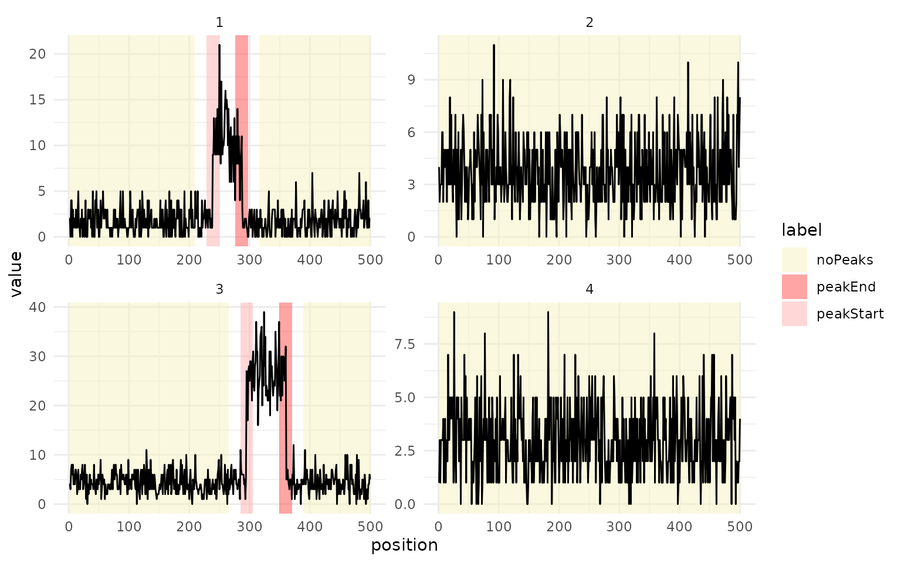
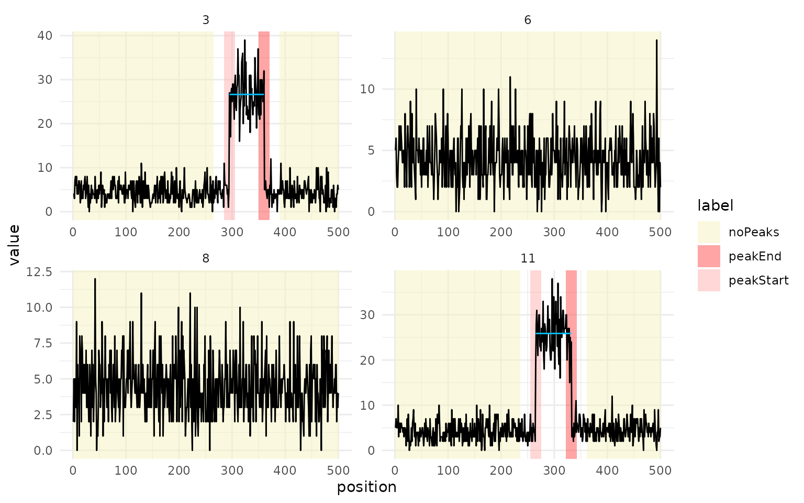

Peak detection in count data
case-study-peaks.RmdThis case study detects peaks in simulated count data. Every sequence is background noise, and every other one also has a burst of high counts. The labels mark where peaks start and end, and where there are none.
Simulated counts
Each sequence has 500 Poisson counts. The background rate is drawn
between 1 and 5, so the right penalty differs between sequences. Odd
sequences have a peak of 40 to 80 positions at six times the background
rate, labelled with peakStart and peakEnd
regions around its edges and noPeaks regions on either
side. Even sequences are labelled noPeaks from end to
end.
set.seed(2)
n_seq = 40L
n_data = 500L
counts = vector("list", n_seq)
label = vector("list", n_seq)
for (i in seq_len(n_seq)) {
rate = runif(1L, 1, 5)
y = rpois(n_data, rate)
if (i %% 2L == 1L) {
peak_start = sample(150:300, 1L)
peak_end = peak_start + sample(40:80, 1L)
y[peak_start:peak_end] = rpois(peak_end - peak_start + 1L, 6 * rate)
label[[i]] = data.table(
start = c(1, peak_start - 10, peak_end - 10, peak_end + 30),
end = c(peak_start - 30, peak_start + 10, peak_end + 10, n_data),
label = c("noPeaks", "peakStart", "peakEnd", "noPeaks")
)
} else {
label[[i]] = data.table(start = 1, end = n_data, label = "noPeaks")
}
counts[[i]] = y
}
task = TaskCpt$new(
id = "peaks", backend = data.table(counts = counts, label = label),
target = "label", sequence = "counts", label_type = "peak"
)The first four sequences show both kinds.
autoplot(task$clone()$filter(1:4))
Train and test
partition() holds out 30% of the sequences for testing.
Kmax = 3 allows up to three peaks per sequence, more than
the labels need.
set.seed(1)
sets = partition(task, ratio = 0.7)
learner = lrn("changepoint.intregrcv", Kmax = 3L)
learner$train(task, row_ids = sets$train)
prediction = learner$predict(task, row_ids = sets$test)
prediction$score(msrs(c("changepoint.label_error", "changepoint.auc")), task = task)
#> changepoint.label_error changepoint.auc
#> 0 1The scores are on the twelve test sequences, which the learner did not see.
Decoded peaks
For peak tasks, autoplot() draws each predicted peak as
a horizontal segment at its mean count. Here it shows four test
sequences.

A segment that starts inside the peakStart region and
ends inside the peakEnd region gets both labels right.